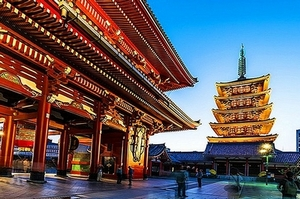
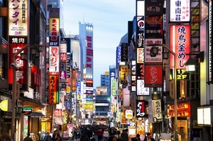

Tokió
Tokió felemelkedése két emberhez köthető: Tokugava Iejaszu sógunhoz és Meidzsi császárhoz. 1603-ban, miután Japán addig háborúban álló részeit egyesítették, Tokugava Iejaszu Edóba (a mai Tokió) helyezte székhelyét. Emiatt a város nagyon gyors fejlődésnek indult, és hamar a világ egyik legnagyobb településévé vált. Lakossága már a 18. században elérte az 1 milliót. Spontán módon vált Japán fővárosává, még ha a császár Kiotót jelölte is ki a birodalma központjává.
263 évvel később a sógunátust megdöntötte két déli prefektúra (Csósú és Szacuma) és visszaállították a császári hatalmat. 1869-ben a névleges vezető, a 17 éves Meidzsi császár Edóba költözött, és a várost átnevezte Tokióra (a Tokió szó jelentése „Keleti Főváros”). A város már ekkor politikai, gazdasági és kulturális központ volt, valamint a császár is ide helyezte a székhelyét, így Tokió az ország valódi fővárosává válhatott. Az Edo-kastélyból lett a Tokiói császári palota.
Tokiót kétszer rázta meg hatalmas katasztrófa, melyből alig sikerült felépülnie. Először a nagy kantói földrengés 1923-ban, majd a második világháború. Az 1945 március 9-10-ei Tokiói bombázás majdnem olyan pusztító volt, mint a Hirosimára és Nagaszakira ledobott atombombák együttvéve. Egész kerületek váltak a földdel egyenlővé. A város 2/5-e elpusztult és közel 110 000 lakos vesztette életét a gyújtóbombák hatására. Tokió lakossága a háború előtti 6.7 millióról 2.8 millióra apadt. Manapság már nem nagyon lehet ezeknek a nyomait látni a városon, de a lakók még mindig viselik a megrázkódtatás nyomait.
A háború után Tokiót nagyon fejlett földalatti- és vonathálózattal építették újjá, amit az 1964. évi nyári olimpiai játékokon mutattak be a világnak. A hetvenes években tovább fejlődött a város, megépült a Sunshine 60 felhőkarcoló és az új, sokszor vitatott repülőtér, a Narita (a városon kívül). A népesség a környező területeket is beleszámítva 11 millió főre duzzadt. A város földalatti- és vonathálózata a világ legforgalmasabb ilyen jellegű rendszere lett, miután egyre több ember költözött Tokióba. A 80-as években a lakásárak az egekbe szöktek egy spekulációs ingatlan-buborék miatt: sokan nagyon meggazdagodtak, de az 1990-es években a buborék kipukkadt, bankok és magánemberek tömege vesztette el minden pénzét emiatt. Ezután gazdasági recesszió következett, így ezt az időszakot „elveszett évtized”-nek nevezik, és ez a recesszió ma is tart.
Japán 10 legnépesebb városa
| Város | Népesség | |
|---|---|---|
| 1. | Tokió | 8,945,695 |
| 2. | Jokohama | 3,688,773 |
| 3. | Oszaka | 2,665,314 |
| 4. | Nagoja | 2,263,894 |
| 5. | Szapporo | 1,913,545 |
| 6. | Kóbe | 1,544,200 |
| 7. | Kiotó | 1,474,015 |
| 8. | Fukuoka | 1,463,743 |
| 9. | Kavaszaki | 1,425,512 |
| 10. | Szaitama | 1,222,434 |